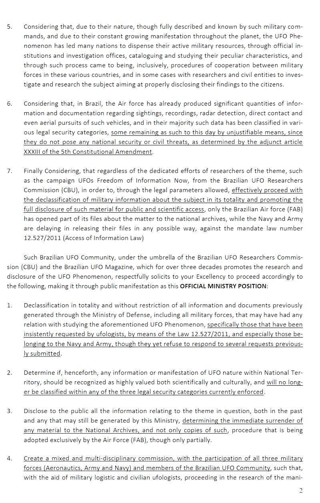

The participants of the IV World UFO Forum (I UFOZ 2012), that occurred in Foz do Iguaçu from 6 thru 9 of December,
under signers of this letter as representatives of the Brazilian UFO Community and some 15 other countries,
respectfully present the following facts as premises to your excellency, and lastly, demand for action, as follows:
Considering the unquestionable reality of the worldwide manifestations of the so-called flying saucers, UFOs,
which are widely known by various scientific and military segments, for at least 60 years, as advanced
extraterrestrial crafts of physical and intelligent nature, and manifested by means of highly advanced
technology.
Considering that such manifestations, commonly known as UFO Phenomenon, are being surveyed and studied by
military authorities under several circumstances, including some Brazilian Air Force (FAB) officials, via the
Unidentified Aerial Objects Investigation System
(SIOANI), in 1969, and by
the Operation Plate, in 1977, both publicly known through the partial disclosure of documents related to
their workings and achieved results.
Considering the system and instrument records of these manifestations as already publicly recognized by several
nations around the globe, and the same has occurred in Brazil, in August 10th, 2010, with the publication at the
Nation official journal (Diário Oficial da União) of the Resolution 551/GC3, sent forth and signed by the
Aeronautic commander, Brigadier Juniti Saito(tenente-brigadeiro-do-ar), making known the fact that the Brazilian
Air Force (FAB) does accommodate, processes and has procedures for UFO sightings and accounts.
Considering the numerous occurrences of such phenomenon, when recorded and organized in systematic manner by the
Air Forces of several nations, including Brazil, had risen considerable attention to their characteristics in
several military rankings and attested that the crafts involved possesses an incompatible technology to what
is currently known by science and though only conceited within such reserved ranks, need further
consideration and investigation.
Considering that, due to their nature, though fully described and known by such military commands, and due to
their constant growing manifestation throughout the planet, the UFO Phenomenon has led many nations to dispense
their active military resources, through official institutions and investigation offices, cataloguing and
studying their peculiar characteristics, and through such process came to being, inclusively, procedures of
cooperation between military forces in these various countries, and in some cases with researchers and civil
entities to investigate and research the subject aiming at properly disclosing their findings to the citizens.
Considering that, in Brazil, the Air force has already produced significant quantities of information and
documentation regarding sightings, recordings, radar detection, direct contact and even aerial pursuits of such
vehicles, and in their majority such data has been classified in various legal security categories, some
remaining as such to this day by unjustifiable means, since they do not pose any national security or civil
threats, as determined by the adjunct article XXXIII of the 5th Constitutional Amendment.
Finally Considering, that regardless of the dedicated efforts of researchers of the theme, such as the campaign
UFOs Freedom of Information Now, from the Brazilian UFO Researchers Commission
(CBU), in order to, through the legal parameters allowed, effectively proceed with the
declassification of military information about the subject in its totality and promoting the full disclosure
of such material for public and scientific access, only the Brazilian Air force (FAB) has opened part of
its files about the matter to the national archives, while the Navy and Army are delaying in releasing their
files in any possible way, against the mandate law number 12.527/2011 (Access of Information Law)
 Page 2 de la lettre d'origine
Such Brazilian UFO Community, under the umbrella of the Brazilian UFO Researchers Commission (CBU) and the Brazilian
UFO Magazine, which for over three decades promotes the research and disclosure of the UFO Phenomenon, respectfully
solicits to your Excellency to proceed accordingly to the following, making it through public manifestation as this
OFFICIAL MINISTRY POSITION:
Declassification in totality and without restriction of all information and documents previously generated
through the Ministry of Defense, including all military forces, that may have had any relation with studying the
aforementioned UFO Phenomenon, specifically those that have been insistently requested by ufologists, by
means of the Law 12.527/2011, and especially those belonging to the Navy and Army, though they yet refuse to
respond to several requests previously submitted.
Determine if, henceforth, any information or manifestation of UFO nature within National Territory, should be
recognized as highly valued both scientifically and culturally, and will no longer be classified within any
of the three legal security categories currently enforced.
Disclose to the public all the information relating to the theme in question, both in the past and any that may
still be generated by this Ministry, determining the immediate surrender of any material to the National
Archives, and not only copies of such, procedure that is being adopted exclusively by the Air Force
(FAB), though only partially.
Create a mixed and multi-disciplinary commission, with the participation of all three military forces
(Aeronautics, Army and Navy) and members of the Brazilian UFO Community, such that, with the aid of military
logistic and civilian ufologists, proceeding in the research of the manifestation of the UFO Phenomenon, with
subsequent disclosure to society, through regular means of information that may be suited to the subject.
Page 3 de la lettre d'origine
A. J. Gevaerd (PR) Fernando A. Ramalho (DF) Gener Silva (SP)